1036L10 CAMSHAFTS IN CAMSHAFT HOUSING - R.R. - INCLUDES CAMSHAFT HOUSING REPLACEMENT IF NECESSARY
- Path
- Procedures > 10 ENGINE > 1036 TIMING SYSTEM > 1036L CAMSHAFT (2) IN CAMSHAFT HOUSING (1) > 1036L10 CAMSHAFTS IN CAMSHAFT HOUSING - R.R. - INCLUDES CAMSHAFT HOUSING REPLACEMENT IF NECESSARY
- Kind
- repair procedure (removal / refitting; the operation number is the code)
- Applies to
- engines: 1.9 JTD 16v, 2.4 JTD 20v; all production periods
- Interactive page
- https://sloeber94.github.io/elrnDB-fCrm/en/#/194000282
Applies to: engines: 1.9 JTD 16v; all production periods
 Removing
Removing
 Refitting
Refitting- Position the vehicle on a lift.
Op. 1016A10 SOUND-PROOFING COVER - R.R
Op. 5530B52 BATTERY SUPPORT/DRIP TRAY - R.R
Op. 1084A16 OIL DIPSTICK PIPE - R.R
Op. 1048A50 TURBOCHARGER AIR INTAKE PIPE - R.R.
Op. 4450B12 FRONT WHEELS (TWO) - R+R
Op. 7055B66 ENGINE COMPARTMENT DUST COVER IN RIGHT FRONT WHEEL ARCH - R.R.
Op. 7055B91 RIGHT FRONT WHEEL ARCH LINER - R.R.
Op. 7055B54 UNDER ENGINE PROTECTION/GUARD - R.R.
1. Undo the radiator coolant drain plug.
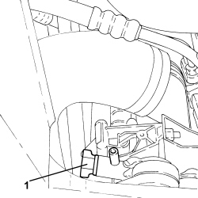
Applies to: engines: 1.9 JTD 16v; all production periods
1. Disconnect the rapid connector for the fuel return pipe to the tank, fuel return manifold side.

Applies to: engines: 1.9 JTD 16v; all production periods
1. Disconnect the vacuum intake pipes from the vacuum reservoir.
2. Loosen the bands and disconnect the engine oil vapour recovery pipes, engine oil vapour separator side.
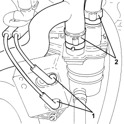
Applies to: engines: 1.9 JTD 16v; all production periods
1. Undo the bolts (1a) and remove the oil vapour recovery pipe between the separator and the turbo (1b).

Applies to: engines: 1.9 JTD 16v; all production periods
1. Disconnect the flexible pipe from the rigid vacuum intake pipe from the vacuum pump.
2. Disconnect the flexible pipe from the rigid vacuum pipe for the turbocharger vane position actuator control solenoid.
3. Undo the bolts (3a) and remove the vacuum pipes (3b).

Applies to: engines: 1.9 JTD 16v; all production periods
1. Loosen the band and disconnect the engine oil vapour recovery pipe, engine oil filler side.
2. Disconnect the rapid connector for the vacuum intake pipe from the vacuum pump.
3. Undo the bolts (3a) and disconnect the air supply hose from the heat exchanger to the intake manifold (3b).
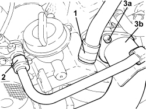
Applies to: engines: 1.9 JTD 16v; all production periods
1. Undo the bolt (1a) and move the air supply hose from the heat exchanger to the intake manifold (1b) aside.

Applies to: engines: 1.9 JTD 16v; all production periods
1. Disconnect the electrical connection from the air flow meter.
Description | Connector | |
|---|---|---|
1 | Air flow meter |

Applies to: engines: 1.9 JTD 16v; all production periods
1. Disconnect the electrical connection from the cam angle sensor.
Description | Connector | |
|---|---|---|
1 | Timing sensor |
2. Disconnect the electrical connection of the air conditioner compressor.
Description | Connector | |
|---|---|---|
2 | Air conditioning compressor engagement electro-magnet | See L020 AIR CONDITIONING COMPRESSOR ENGAGEMENT ELECTRO-MAGNET |
3. Disconnect the electrical connections from the injectors.
Description | Connector | |
|---|---|---|
3 | Injector |
4. Disconnect the electrical connection from the fuel pressure regulator on the injector single manifold.
Description | Connector | |
|---|---|---|
4 | Fuel pressure regulator on rail |
5. Disconnect the electrical connection from the fuel pressure sensor.
Description | Connector | |
|---|---|---|
5 | Fuel pressure sensor |
6. Disconnect the electrical connections from the heater plugs.
Description | Connector | |
|---|---|---|
6 | Heater plugs |

Applies to: engines: 1.9 JTD 16v; all production periods
1. Loosen the bands, undo botls (1a) and remove the coolant return pipe to the engine coolant reservoir (1b).
2. Unscrew the connectors (2a) and (2b) and remove the pipes from the fuel manifold to injectors (2c).
3. Manually push the clips and disconnect the pipe from the injectors to the fuel manifold, injector side.
4. Disconnect the pipe from the injectors to the fuel recovery manifold, fuel recovery manifold side and remove it.
5. Undo the connectors (5a), (5b) and remove the pipe from the pressure pump to the fuel manifold (5c).
6. Loosen the bands and remove the fuel return pipe from the fuel manifold to the fuel return manifold.
7. Undo the fixing bolts (7a) and remove the single fuel manifold pipe (7b).
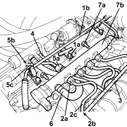
Applies to: engines: 1.9 JTD 16v; all production periods
1. Undo the injector bracket retaining nuts.
2. Remove the injectors (2a) complete with brackets using the tools (2b).
Tool | Description | Function | Validity |
|---|---|---|---|
1870897300 | Extractor | Removing injectors | 1.9 JTD 8V 1.9 JTD 16V 2.4 JTD 20V |

Applies to: engines: 1.9 JTD 16v; all production periods
1. Undo the bolts (1a) and remove the engine oil filler (1b).
2. Remove the gasket.
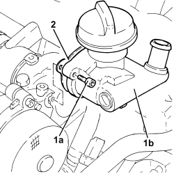
Applies to: engines: 1.9 JTD 16v; all production periods
1. Undo the bolts (1a) and remove the vacuum unit (1b).
2. Remove the gasket.
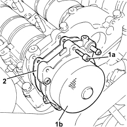
Applies to: engines: 1.9 JTD 16v; all production periods
1. Undo the bolts (1a) and remove the protective timing cover (1b).

Applies to: engines: 1.9 JTD 16v; all production periods
Op. 4410D16 BRACKET (ONE) RETAINING CHASSIS TO BODY - R R
Op. 1092G10 SINGLE ENGINE BELT - R.R
Op. 1092A10 CRANKSHAFT PULLEY - R + R
- Position a hydraulic jack beneath the engine.
1. Undo the bolts (1a), (1b), then remove the power unit timing side front support flexible mounting (1c).

Applies to: engines: 1.9 JTD 16v; all production periods
1. Undo the bolts (1a) and remove the power unit timing side rigid support (1b) complete with fixed tensioner (1c).

Applies to: engines: 1.9 JTD 16v; all production periods
1. Loosen the bolt retaining the timing belt moving tensioner.
2. Release and remove the toothed timing drive belt.

Applies to: engines: 1.9 JTD 16v; all production periods
- Fit the timing side power unit rigid support temporarily in its housing and secure it using the bolts.
- Fit the timing side power unit front support flexible mounting temporarily in its housing and secure it using the bolts.
- Remove the hydraulic jack from beneath the engine.
1. Undo the bolts (1a) and (1b) and remove the camshaft housing assembly (1c).
2. Remove the gasket.
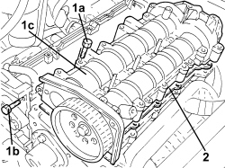
Applies to: engines: 1.9 JTD 16v; all production periods
1. Position the camshaft housing (1a) in a vice using the tool (1b).
Tool | Description | Function | Validity |
|---|---|---|---|
1860470001 | Support | Overhaul cylinder head | 1.8 2.2 1.9 JTD 8V 1.9 JTD 16V |
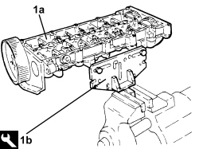
Applies to: engines: 1.9 JTD 16v; all production periods
1. Undo the bolt (1a) and remove the cam angle sensor (1b).
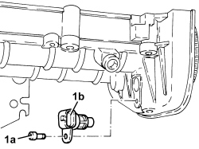
Applies to: engines: 1.9 JTD 16v; all production periods
1. Remove plug (1a) and fit camshaft timing tools (1b) to the cylinder head extension.
Tool | Description | Function | Validity |
|---|---|---|---|
1870896900 | Template | Engine tuning | 1.9 JTD 16V |
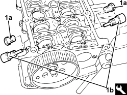
Applies to: engines: 1.9 JTD 16v; all production periods
1. Undo the bolts fixing the camshaft gears.
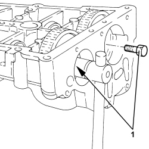
Applies to: engines: 1.9 JTD 16v; all production periods
1. Undo the bolt (1a) and remove the exhaust side camshaft toothed drive pulley (1b).
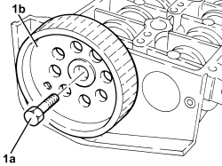
Applies to: engines: 1.9 JTD 16v; all production periods
- Remove the camshaft timing tools from the camshaft housing.
Tool | Description | Function | Validity |
|---|---|---|---|
1870896900 | Template | Engine tuning | 1.9 JTD 16V |
1. Wtihdraw the camshafts (1a), as far as necessary and remove the camshaft gears (1b).
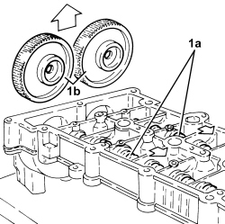
Applies to: engines: 1.9 JTD 16v; all production periods
1. Using a suitable drift, extract the inlet side camshaft (1a) and plug (1b).
2. Using a suitable drift, extract the exhaust side camshaft (2a) and oil seal (2b).
- Remove the exhaust side camshaft oil seal.
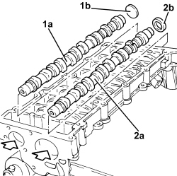
Applies to: engines: 1.9 JTD 16v; all production periods
Refitting
Removing- Place the camshafts in their housings.
- Place the camshaft caps in their housings and secure them without tightening the bolts.
1. Fit the camshaft timing tools.
Tool | Description | Function | Validity |
|---|---|---|---|
1870896900 | Template | Engine tuning | 1.9 JTD 16V |
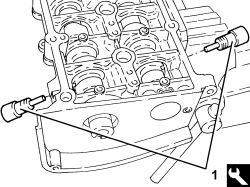
Applies to: engines: 1.9 JTD 16v; all production periods
1. Tighten the camshaft gear fixing bolts to the recommended torque.
Component | Fastening | dia | Value (daNm) | Validity |
|---|---|---|---|---|
Camshaft gears | Bolt | M12 | (camshaft side) 2.9 - 3.2 + 40° | 1.9 JTD 16v |
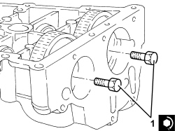
Applies to: engines: 1.9 JTD 16v; all production periods
1. Fit the exhaust side camshaft front oil seal (1a) using the tool (1b).
Tool | Description | Function | Validity |
|---|---|---|---|
1870896800 | Fitting tool | Fitting exhaust camshaft oil seal | 1.9 JTD 16V |
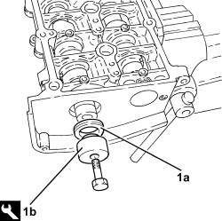
Applies to: engines: 1.9 JTD 16v; all production periods
- Fit the inlet side camshaft plug.
- Place the exhaust side camshaft toothed drive pulley in its housing and secure it without tightening the bolt.
1. Position the cam angle sensor (1a) in its housing and secure it tightening the bolt (1b) to the recommended torque.
Component | Fastening | dia | Value (daNm) | Validity |
|---|---|---|---|---|
Cam angle sensor | Bolt (pretreated to be replaced for 1.9 JTD 8v) | M6 | (cylinder head extension side) 0.8 - 1.0 | 1.9 JTD 8V 1.9 JTD 16v 2.4 JTD 20v |
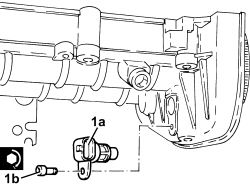
Applies to: engines: 1.9 JTD 16v; all production periods
- Remove the support tool complete with camshaft housing from the vice and separate them.
- Remove the intake camshaft timing tool and tighten the plug.
1. Position the cylinder head locating bushes on the cylinder head as shown in the figure.
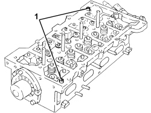
Applies to: engines: 1.9 JTD 16v; all production periods
- Replace the upper cylinder head gasket.
1. Position the camshaft housing assembly (1a) in its housing and secure it by tightening the bolts (1b) and the new bolts (1c) to the recommended torque.
Component | Fastening | dia | Value (daNm) | Validity |
|---|---|---|---|---|
Camshaft housing | Bolt | M8 | (cylinder head side) 2.3 - 2.8 | 1.9 JTD 16v |
Component | Fastening | dia | Value (daNm) | Validity |
|---|---|---|---|---|
Pressure pump mounting | Bolt (pretreated to be replaced) | M8 | (cylinder head extension side) 2.3 - 2.8 | 1.9 JTD 16v |
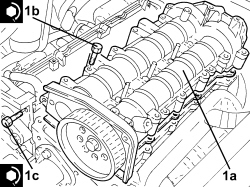
Applies to: engines: 1.9 JTD 16v; all production periods
- Position a hydraulic jack beneath the engine.
1. Undo the bolts (1a), (1b), then remove the power unit timing side front support flexible mounting (1c) fitted temporarily.

Applies to: engines: 1.9 JTD 16v; all production periods
1. Undo the bolts (1a) and remove the power unit timing side rigid support (1b) complete with fixed tensioner (1c) fitted temporarily.

Applies to: engines: 1.9 JTD 16v; all production periods
1. Remove the plug (1a) and refit the exhaust camshaft template (1b).
Tool | Description | Function | Validity |
|---|---|---|---|
1870896900 | Template | Engine tuning | 1.9 JTD 16V |
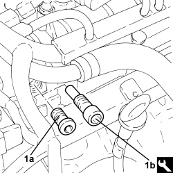
Applies to: engines: 1.9 JTD 16v; all production periods
1. Loosen the bolt (1a) fixing the exhaust side camshaft toohted pulley using tools (1b) and (1c) for counter-torque.
Tool | Description | Function | Validity |
|---|---|---|---|
1870815000 | Counter-torque | Loosen/tighten timing driven toothed pulley fixing bolt Loosen/tighten nut securing front driveshaft to wheel hub | 1.9 JTD 16V 1.9 JTD 8V |
Tool | Description | Function | Validity |
|---|---|---|---|
1870836000 | Pins | Loosen/tighten timing driven toothed pulley fixing bolt | 1.9 JTD 16V 1.9 JTD 8V |

Applies to: engines: 1.9 JTD 16v; all production periods
1. Undo the bolt fixing the crankcase front cover shown in the diagram.
- Temporarily fit the toothed timing drive belt on the toothed drive pulley.
2. Fit the tool and fasten it using the calibrated screw.
Tool | Description | Function | Validity |
|---|---|---|---|
2000003000 | Template | Engine tuning | 1.9 JTD 16V 1.9 JTD 8V |
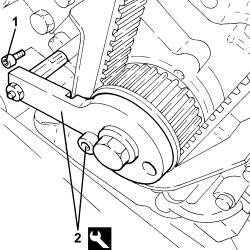
Applies to: engines: 1.9 JTD 16v; all production periods
1. Fit the toothed timing belt completely taking care to ensure that the yellow references on it are aligned with the references on the toothed pullies.
2. Use a screwdriver for leverage on the tensioner arm until the reference (2a) for the tensioner is in the maximum tension position and tighten the tensioner bolt (2b) to the recommended torque in this position.
Component | Fastening | dia | Value (daNm) | Validity |
|---|---|---|---|---|
Timing moving tensioner | Nut | M8 | 2.3 ÷ 2.8 | 1.9 JTD 16v 1.9 JTD 8v |
3. Tighten the bolt fixing the exhaust side camshaft toothed pulley to the recommended torque using the tool for counter-torque.
Component | Fastening | dia | Value (daNm) | Validity |
|---|---|---|---|---|
Driven toothed pulley | Bolt | M12 | (camshaft side) 2.9 - 3.2 + 40° | 1.9 JTD 16v 1.9 JTD 8v |
Tool | Description | Function | Validity |
|---|---|---|---|
1870815000 | Counter-torque | Loosen/tighten timing driven toothed pulley fixing bolt Loosen/tighten nut securing front driveshaft to wheel hub | 1.9 JTD 16V 1.9 JTD 8V |
Tool | Description | Function | Validity |
|---|---|---|---|
1870836000 | Pins | Loosen/tighten timing driven toothed pulley fixing bolt | 1.9 JTD 16V 1.9 JTD 8V |

Applies to: engines: 1.9 JTD 16v; all production periods
- Remove the timing tools.
Tool | Description | Function | Validity |
|---|---|---|---|
1870896900 | Template | Engine tuning | 1.9 JTD 16V |
Tool | Description | Function | Validity |
|---|---|---|---|
2000003000 | Template | Engine tuning | 1.9 JTD 16V 1.9 JTD 8V |
- Rotate the crankshaft through two revolutions.
1. Loosen the moving timing tensioner nut.
2. Use a screwdriver for leverage on the tensioner arm until the reference (2a) for the tensioner is in line with the reference opening (2b) and tighten the tensioner bolt (2c) to the recommended torque in this position.
Component | Fastening | dia | Value (daNm) | Validity |
|---|---|---|---|---|
Timing moving tensioner | Nut | M8 | 2.3 ÷ 2.8 | 1.9 JTD 16v 1.9 JTD 8v |
- Recheck the timing by refitting the timing tools.

Applies to: engines: 1.9 JTD 16v; all production periods
- Tighten the bolt fixing the crankcase front cover removed previously.
- Tighten the plug on the cylinder head extension for fitting the exhaust side timing tool.
1. Place the power unit timing side rigid support (1a) in its housing and secure it tightening the bolts (1b) to the recommended torque.
Component | Fastening | dia | Value (daNm) | Validity |
|---|---|---|---|---|
Timing side power unit rigid support | Bolt | M10 | (engine crankcase side) 4.5 - 5.5 | 1.9 JTD 8v 1.9 JTD 16v |

Applies to: engines: 1.9 JTD 16v; all production periods
1. Place the timing side power unit front support flexible mounting (1a) in its housing and secure it tightening the bolts (1b), (1c) (1d) and (1e) to the recommended torque.
Component | Fastening | dia | Value (daNm) | Validity |
|---|---|---|---|---|
Timing side power unit rigid support flexible mounting | Bolt | M10 | (bodyshell side) 5.0 - 6.0 |
Component | Fastening | dia | Value (daNm) | Validity |
|---|---|---|---|---|
Timing side power unit rigid support flexible mounting | Nut | M10 | (bodyshell side) 5.0 - 6.0 |
Component | Fastening | dia | Value (daNm) | Validity |
|---|---|---|---|---|
Timing side power unit rigid support flexible mounting | Bolt | M10 | (rigid support side) 5.0 - 6.0 | 1.8 2.2 1.9 JTD 16v 1.9 JTD 8v |
- Remove the hydraulic jack under the engine crankcase sump.

Applies to: engines: 1.9 JTD 16v; all production periods
- Remove the hydraulic jack from beneath the engine.
Op. 1092A10 CRANKSHAFT PULLEY - R + R
Op. 1092G10 SINGLE ENGINE BELT - R.R
Op. 4410D16 BRACKET (ONE) RETAINING CHASSIS TO BODY - R R
- Fit the timing belt covers and secure them using the bolts.
1. Place the gasket back in its housing.
2. Place the vacuum unit (2a) in its housing and secure it by tightening the new bolts (2b) to the recommended torque.
Component | Fastening | dia | Value (daNm) | Validity |
|---|---|---|---|---|
Vacuum unit | Bolt (pretreated to be replaced) | M6 | (cylinder head extension side) 0.5 + 50° | 1.9 JTD 16v 2.4 JTD 20v |
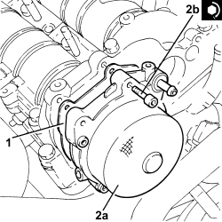
Applies to: engines: 1.9 JTD 16v; all production periods
1. Place the gasket back in its housing.
2. Place the engine oil filler (2a) in its housing and secure it by tightening the bolts (2b) to the recommended torque.
Component | Fastening | dia | Value (daNm) | Validity |
|---|---|---|---|---|
Engine oil filler | Bolt | M6 | (cylinder head extension side) 0.8 - 1.0 | 1.9 JTD 16v 2.4 JTD 20v |
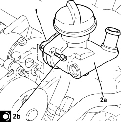
Applies to: engines: 1.9 JTD 16v; all production periods
1. Refit the injectors (1a) complete with brackets and tighten the nuts (1b) to the specified torque.
Component | Fastening | dia | Value (daNm) | Validity |
|---|---|---|---|---|
Injector brackets | Nut | M8 | (cylinder head extension side) 2.3 - 2.8 | 1.9 JTD 16v 2.4 JTD 20v |

Applies to: engines: 1.9 JTD 16v; all production periods
1. Place the single fuel manifold pipe (1a) in its housing and secure it tightening the bolts (1b) to the recommended torque.
Component | Fastening | dia | Value (daNm) | Validity |
|---|---|---|---|---|
Single fuel manifold pipe (rail) | Bolt | M8 | (cylinder head extension side) 2.3 - 2.8 | 1.9 JTD 16v 2.4 JTD 20v |
2. Place the fuel return pipe from the fuel manifold to the fuel return manifold in its housing and tighten the bands.
3. Place the pipe from the pressure pump to the fuel manifold (3a) back in its housing and tighten the connectors (3b) and (3c) to the recommended torque.
Component | Fastening | dia | Value (daNm) | Validity |
|---|---|---|---|---|
Pipe from pressure pump to fuel manifold | Connector | M14 | (fuel manifold side) 2.2 - 2.4 | 1.9 JTD 16v 2.4 JTD 20v |
Component | Fastening | dia | Value (daNm) | Validity |
|---|---|---|---|---|
Pipe from pressure pump to fuel manifold | Connector | M......... | (pressure pump side) ..................... | 1.9 JTD 16v 2.4 JTD 20v |
4. Fit the pipe from the injectors to the fuel recovery manifold and connect to the fuel recovery manifold.
5. Connect the pipe from the injectors to the fuel recovery manifold to the injectors and push home until the clips click into place.
6. Place the pipes from the fuel manifold to the injectors (6a) in their housings and secure them tightening the connectors (6b) and (6c) to the recommended torque.
Component | Fastening | dia | Value (daNm) | Validity |
|---|---|---|---|---|
Pipes from fuel manifold to injectors | Connector | M14 | (fuel manifold side) 2.2 - 2.4 | 1.9 JTD 16v 2.4 JTD 20v |
Component | Fastening | dia | Value (daNm) | Validity |
|---|---|---|---|---|
Pipes from fuel manifold to injectors | Connector | M12 | (injector side) 2.4 - 2.6 | 1.9 JTD 16v 2.4 JTD 20v |
7. Place the coolant return pipe to the engine coolant reservoir (7a) in position and secure it tightening the bolts (7b) and the bands.
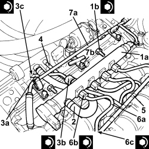
Applies to: engines: 1.9 JTD 16v; all production periods
- Connect the electrical connections to the heater plugs.
- Connect the electrical connection to the fuel pressure sensor.
- Connect the electrical connection to the fuel pressure regulator on the injector single manifold.
- Connect the electrical connections to the injectors.
- Connect the air conditioner compressor electrical connection.
- Connect the electrical connection to the cam angle sensor.
- Connect the electrical connection to the air flow meter.
- Place the air supply pipe from the heat exchanger to the intake manifold back in its housing and secure it using the bolt.
- Connect the air supply hose from the heat exchanger to the intake manifold, throttle body side and secure it using the bolts.
- Connect the rapid connector for the vacuum intake pipe from the vacuum pump.
- Connect the engine oil vapour recovery pipe, engine oil filler side and tighten the band.
- Place the vacuum pipes in their housings and secure them using the bolts.
- Connect the flexible pipe to the rigid vacuum pipe for the turbocharger vane position actuator control solenoid.
- Connect the flexible pipe to the rigid vacuum intake pipe from the vacuum pump.
- Place the oil vapour recovery pipe between the separator and the turbo in its housing and secure it using the bolts.
- Connect the engine oil vapour recovery pipes, engine oil vapour separator side and tighten the bands.
- Connect the vacuum intake pipes to the vacuum reservoir.
- Connect the rapid connector for the fuel return pipe to the tank, fuel return manifold side.
- Tighten the coolant drain plug to the radiator.
Op. 7055B91 RIGHT FRONT WHEEL ARCH LINER - R.R.
Op. 7055B66 ENGINE COMPARTMENT DUST COVER IN RIGHT FRONT WHEEL ARCH - R.R.
Op. 4450B12 FRONT WHEELS (TWO) - R+R
Op. 1048A50 TURBOCHARGER AIR INTAKE PIPE - R.R.
Op. 1084A16 OIL DIPSTICK PIPE - R.R
Op. 5530B52 BATTERY SUPPORT/DRIP TRAY - R.R
Op. 0010T20 ENGINE COOLANT - CHANGE
Op. 7055B54 UNDER ENGINE PROTECTION/GUARD - R.R.
Op. 1016A10 SOUND-PROOFING COVER - R.R
- Remove the vehicle from the lift.
Applies to: engines: 2.4 JTD 20v; all production periods
- On this version it is not possible to remove/refit the camshafts from the camshaft housing on on the car.
To perform this operation, remove/refit the power unit
Op. 1004B14 POWER UNIT WITH AUTOMATIC TRANSMISSION R + R
and then work at the bench, customising the engine service procedures for this operation.
Topics linked from this page (21)
- 0010T20 ENGINE COOLANT - CHANGE
- 1004B14 POWER UNIT WITH AUTOMATIC TRANSMISSION R + R
- 1016A10 SOUND-PROOFING COVER - R.R
- 1048A50 TURBOCHARGER AIR INTAKE PIPE - R.R.
- 1084A16 OIL DIPSTICK PIPE - R.R
- 1092A10 CRANKSHAFT PULLEY - R + R
- 1092G10 SINGLE ENGINE BELT - R.R
- 4410D16 BRACKET (ONE) RETAINING CHASSIS TO BODY - R R
- 4450B12 FRONT WHEELS (TWO) - R+R
- 5530B10 BATTERY - R+R
- 5530B52 BATTERY SUPPORT/DRIP TRAY - R.R
- 7055B54 UNDER ENGINE PROTECTION/GUARD - R.R.
- 7055B66 ENGINE COMPARTMENT DUST COVER IN RIGHT FRONT WHEEL ARCH - R.R.
- 7055B91 RIGHT FRONT WHEEL ARCH LINER - R.R.
- A040 HEATER PLUGS
- K041 AIR FLOW METER
- K047 TIMING SENSOR
- K083 FUEL PRESSURE SENSOR
- L020 AIR CONDITIONING COMPRESSOR ENGAGEMENT ELECTRO-MAGNET
- N070 INJECTOR
- N087 FUEL PRESSURE REGULATOR ON RAIL